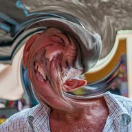

Swirl

Twists the layer around Center like a whirlpool, strongest in the middle and fading out at Radius (a share of the layer size). Negative Strength twists the other way.
Swirl twists the layer around a point like a whirlpool. Center is the middle of the twist, Strength how much it twists (negative values twist the other way) and Radius how far from the center it reaches. Animate Strength from 0 for a spiral transition.
Settings
| Setting | Type | Range | Default |
|---|---|---|---|
| Center | Point (X, Y) | 0 to 1 | 0.5, 0.5 |
| Strength | Number | -0.5 to 0.5 | 0.1 |
| Radius | Number | 0 to 3 | 0.3 |